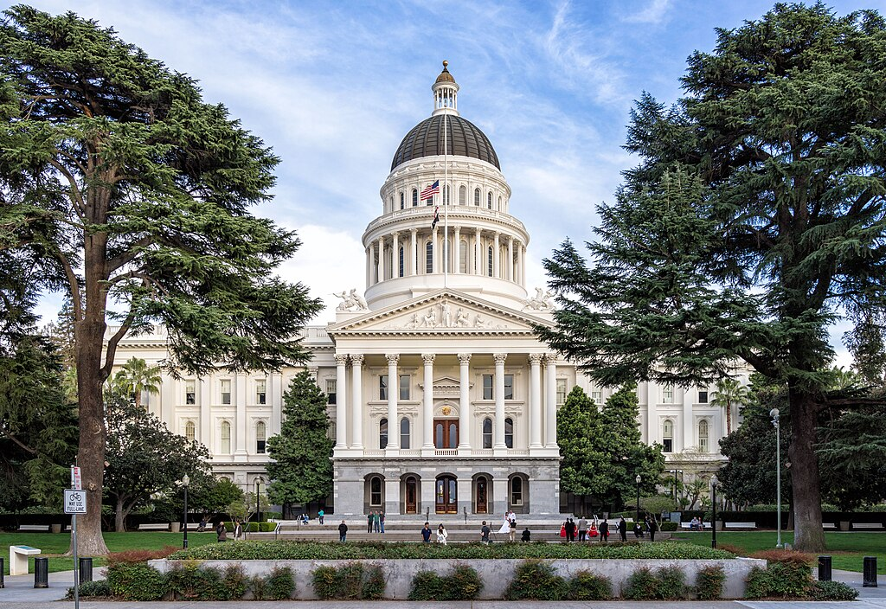
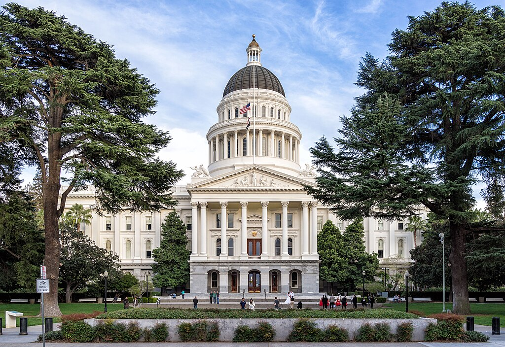

Information about the page
Now I could go on about all the boring facts. How big is the state? How many people live here? You didn't come here for that. You came to see why you should come to California. So that's what you're getting.
California is a state of great variety. When waking up you could go for a walk on a beach, eat breakfast at a cafe overlooking the Golden Gate Bridge or try the fair at the Santa Monica Pier. Or you could walk all day and go shopping, but thats not California.
If youre one of those people who go to places just to shop, then your not interested in what a place has to offer. Unless its a Louis Vuitton shop that sells that one purse you absolutely need because your friend Jessica have it, then this site isnt for you. This is for those people who actually want to discover places.
If you want a guide to Los Angeles, San Francisco or San Diego then this isnt for you either. This is for those who want to discover everything (or atleast alot) so maybe try some other sites if that what your looking for.
Now that its out of the way i we can finally dove into California as a place and a vacation location.
California as a vacation location has a lot to offer for everyone. No matter what your interests are, you'll find something to enjoy in the Golden State.
Quick facts
The Eschscholzia californica, perhaps better known as the California Poppy was in 1903 elected as the Californian state flower. Its also referred to as "the Flame Flower" and "Copo de Oro" (Spanish for "golden cup"). The flower is native to the state and can be found in many places. It grows in a variety of habitats, including grasslands, open woodlands, and coastal areas. The flower typically blooms in the spring and early summer, creating vibrant orange and yellow fields that are a popular sight for visitors and locals alike.
California has many native animales. From mammals such as bobcat, gray fox and the california sea lion, to birds and reptiles such as the California Quail, Golden Eagle, Western Rattlesnake and California Kingsnake
The californian flag features a bear, which stands for courage, independence and strength. The bear is modeled after a real bear named Monarch, who was a California Grizzlybear. The species unfortunatly went extinct in the early 1900s. The red star in the upper left corner represents sovereignty. The text "California Republic" refers to a short revolt against Mexico in 1846 actually called the "Bear Flag Revolt", where american settlers declared California an independant republic. The red and white colors of the flag symbolises courage and purity. (more of this era in History)
When it comes to political system, California has mostly been a secure win for the democrats, with the state having voted blue since the 1992 presidental election. Most of the state goverment is also democrats due to this. Not all of California is blue though. Inland areas such as the Central Valley and the Sierras often vote red. It doesen't really make a diffirence though, because the coastal and urban regions such as LA, San Diego and San Francisco vote blue.
.jpg) 
